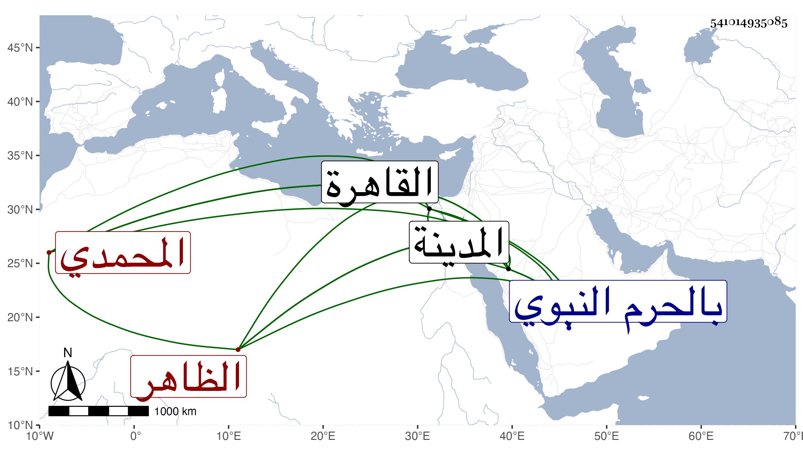

0902Sakhawi.DawLamic.ITO20230111-ara1.EIS1600.541014935085
Biography ID: 541014935085
694
قانم المحمدي الظاهر جقمق والد علي الماضي . ولد تقريبا سنة إحدى وثلاثين وثمانمائة واستقر في مشيخة الخدام بالحرم النبوي بعد موت إينال الإسحاقي ولزم التخلق بالخير مع التلاوة وحضور مجالس العلم مع التواضع ولين الجانب بل كان يقرأ في شرح القدوري على الفخر عثمان الطرابلسي ويجتمع عنده علماء الحنفية وغيرهم . ولما كنت بالمدينة أخذ عني أشياء من الكتب الستة وغيرها كشرح معاني الآثار للطحاوي وحصل القول البديع والرمي بالنشاب وغيرهما من تآليفي وكتبت له إجازة وأخبرني أنه تلا القرآن بروايات على التاج السكندري المالكي بعد تلاوته على غيره من أئمة القراء بل قرأ بعده على الشهاب بن أسد في آخرين وكان يقرأ في مشهد الليث في الجوق رياسة وكذا بالمدينة الشريفة وقرأ في المذهب الحنفي على غير واحد من أئمة القاهرة وغيرها كحسن وعلي الروميين والشمس المحلي وعنه أخذ تفسير النسفي والصلاح الطرابلسي وعنه أخذ الجيرومية في النحو ، وكتب الخط الحسن وظهر بذلك بركة رؤية النبي صلى الله عليه وسلم في سنة ثلاث وخمسين في منامه ومثوله بين يديه وأمره إياه بقراءة الفاتحة بحضرته الشريفة فامتثل وقرأها بتمامها والمنام عندي بخطه في ترجمته من التاريخ الكبير . وفاضت عليه البركات من ثم إلى أن صار رأس خدام الحضرة الشريفة واستمر بالمدينة قائما بذلك ويحج منها كل سنة إلى أن مات في عصر يوم الأحد سادس عشر ذي الحجة سنة تسعين ونعم الرجل رحمه الله وإيانا .
